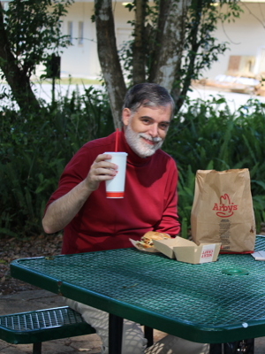
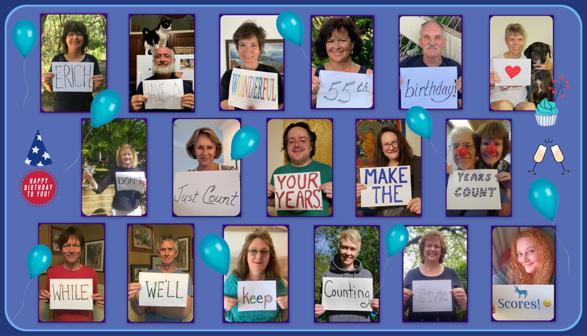
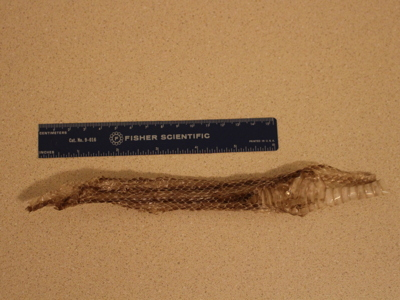
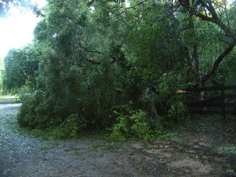

2020 Holiday Web Page

| Erich and Margie's 2020 Holiday Web Page | |
January We ushered in the new year with a dozen friends. Erich vowed to lose 30 pounds this year. Erich's first puzzle book Puzzle Box, Volume 1 was included in the puzzle collector's Curiosity Box XIII. We attended Michael and Deborah's white elephant gift exchange, and got lottery tickets worth $6. Erich enjoyed Miguel's slides of Africa. Erich went with some friends to see Leo Kottke. Erich joined the 20th century by joining Twitch. One of Erich's commercially designed puzzles was reviewed on YouTube. We saw Ben Prestage at the New Smyrna art festival. Margie saw a UFO, but asked Erich not to say anything. Erich lost 6 pounds in January. Pancho has perfected his hotshot Plott trot.
February We celebrated the Year of the Rat at Barb's place. Margie won mahjongg at her table, but does not want it publicized that it was a complete accident. Erich almost won his Super Bowl pool, for the third year in a row. We watched "Groundhog Day" for the umpteenth time. Erich went through his favorite 10,000 songs to pick his favorite 2000 songs. We trekked to St. Augustine to see Dewey Via and David Wilcox. We competed for another bocce medal, getting 3rd out of 7 teams. One of Erich's friends John from college came to visit for a few days with his girlfriend Dawn. We took the boat tour at Blue Spring, walked at Bethune Beach, and had breakfast at the Sugar Mill. One of the random people Erich befriended on the internet turned out to be the daughter of the physics teacher in college who ruined his perfect 4.0 GPA! Erich participated in a home Texas Hold'Em tournament getting 4th place out of 8 players. We visited our friends Erin and Tom on the coast, and saw The Tree Frogs play. We went to see the screening of "The Man Who Would Be King" at the Brantons' place. Erich watched season 1 of "Day Break". Erich lost 3 pounds in February. Pancho has perfected his suspicious sound stop.
March Erich's friend Barbara and her boyfriend Peter came to visit for a week. We did lots of nature stuff, including the local state parks and the beach, and they hit a lot of bookstores. We bought a new answering machine. Then the world turned upside down due to Covid-19. Erich started providing virtual trivia to friends in lieu of hosting home trivia events. Erich watched season 7 of "Orange is the New Black". Margie misses the people she sees out in the world. (And secretly enjoys the quietness.) Erich lost 7 pounds in March. Pancho has perfected his scrumptious scent scamper.
April We celebrated Margie's birthday 2 days early in a park instead of a restaurant, because of Florida's impending shutdown order. We walked at Clark Bay Conservation Area, and did takeout fast food. We watched the International Space station fly over one night. Erich started wearing a mask to go grocery shopping. Margie got a flat tire, and her car has no spare. We celebrated Erich's birthday with poffertjes for breakfast and Indian food for dinner. Erich watched season 1 of "Killing Eve". Erich's trivia group surprised him with a photoshopped birthday card, shown below. Margie does not want to share that she really enjoys doing her taxes. Erich lost 2 pounds in April. Pancho has perfected his sudden squirrel surge.
May Erich's foot neuropathy flared up, ending his exercise regimen. Margie found a snake skin at our front door. At Dunkin' Donuts, the cashier tried to give Erich two coffees, then forgot to take his payment, then forgot to give him change. In lieu of the canceled Gamblefest, we listened to two weeks of evening streaming performances by folks who were supposed to perform. Erich watched season 1 of "Star Trek Picard". Margie does not want it known that she is watching That '70s Show for the first time and loving it. Erich lost 0 pounds in May. Pancho has perfected his delirious dinner dance.
June In a 5-minute span, Erich saw commercials for Morgan & Morgan law firm on 3 different channels. Erich submitted a thought to United by Covid to be turned into artwork. Erich watched seasons 1 and 2 of "Star Trek Discovery". Margie would rather people didn't know that, when alone, she sometimes sings the alphabet song backwards. Erich lost 0 pounds in June. Pancho has perfected his sassy show strut.
July Erich watched seasons 1 and 2 of "Dead to Me", and season 1 of "The Mandalorian". Erich fed the motherless ducklings at Mill Lake Park. Margie wanted Erich to vote in the Florida primary, so Erich gave Margie his absentee ballot to fill out for him. Margie will not be telling anyone how much Jack Daniel's she consumed this month. Erich lost 0 pounds in July. Pancho has perfected his irrational rapid reversal.
August We had a big storm with hail, and a tree fell on our fence. Erich watched seasons 1 and 2 of "The Umbrella Academy". We had a lovely meal at the Branton's, our first socializing since the pandemic started. Margie dropped an open container of baked beans, and it landed upside-down, but they didn't spill because they all stuck to the container. Erich started playing Hearthstone. No one will ever know Margie scored 8 on 30 trivia questions. Erich decided 2000 songs wasn't enough, so he made a playlist of his favorite 3333 songs. Erich gained 1 pound in August. Pancho has perfected his sedate Sunday stroll.
September Our fence was repaired. Erich lost 11 pounds in one day, according to his scale. Margie watched the sunset with Joan and the Dunn's. Erich's car wouldn't start, so he had to tow it to Honda to be fixed. Our UV light system for purifying our water stopped working. Erich made buzzword BINGO cards for the presidential debates. No one should know that Margie really enjoyed burning her old financial records. Erich lost 2 pounds in September. Pancho has perfected his soft sleepy snore.
October Our fence was painted. Erich watched seasons 1 and 2 of "After Life". Margie got hit by an acorn that she swears must have dropped from the space station. The picture of the bruise was too gruesome to be shown here. We had another lovely meal at the Branton's. Margie will never tell anyone that she changed a grade on her 9th-grade report card. Erich gained 1 pound in October. Pancho has perfected his zany zigzag zoomies.
November Margie and Pancho saw a coyote on one of their morning walks. One of Erich's problems was used as Macalester College's Problem of the Week and will be published in the American Mathematical Monthly. Our friend Shannon paid us a nice visit and even brought one of her famous craft cocktails. We bought a new toaster. Erich watched season 1 of "Soulmates". Margie firmly believes there is nothing odd about her watching the Eloise movies every year; nevertheless, she doesn't tell people. Erich gained 1 pound in November. Pancho has perfected his playful puppy pounce.
December When Erich was about to use a Burger King coupon, the wind blew it out of his car. Margie bought a new scale. The IRS finally processed all of Erich's tax documents. Erich watched season 2 of "The Mandalorian". Another one of Erich's puzzle designs was reviewed on YouTube. We went out to see the conjunction of Jupiter and Saturn. Margie wants to keep secret that she's a little too detail-obsessed. Erich gained 2 pounds in December. Pancho has perfected his sad, soulful stare. (He already got his meal/snack.)
Erich's holiday puzzles can be found here. If anyone wants to be on Erich's trivia mailing list, let us know. You can see our archive of our previous holiday web pages here.
   